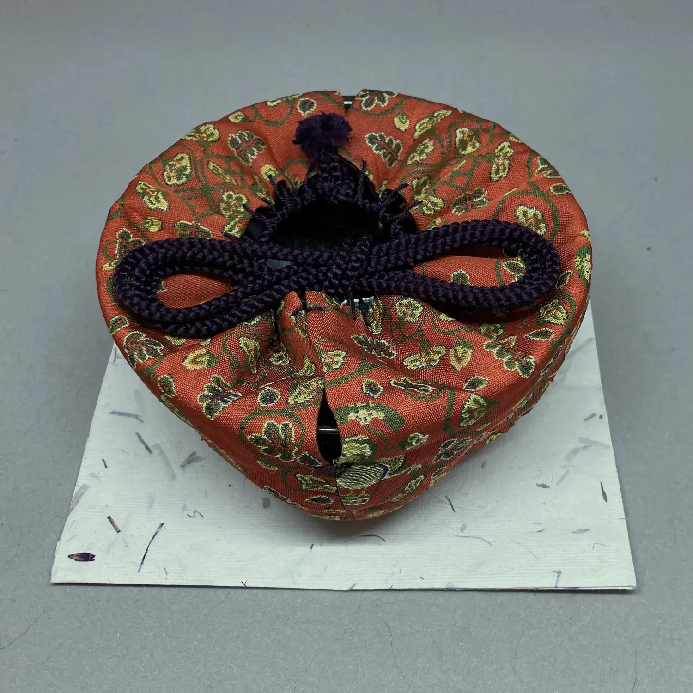
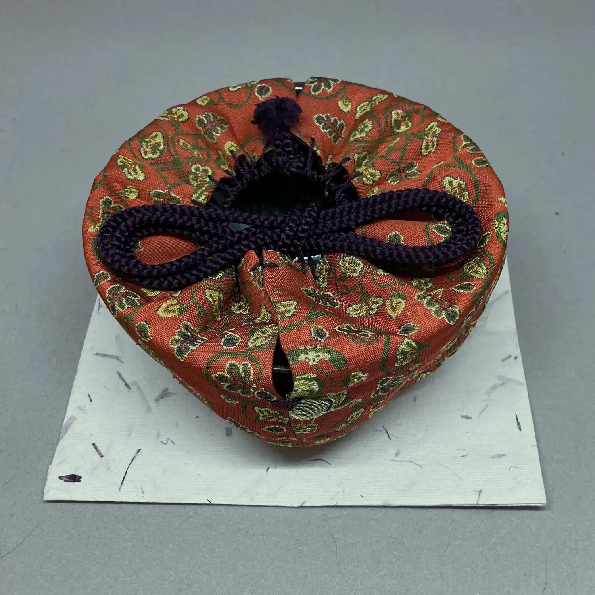
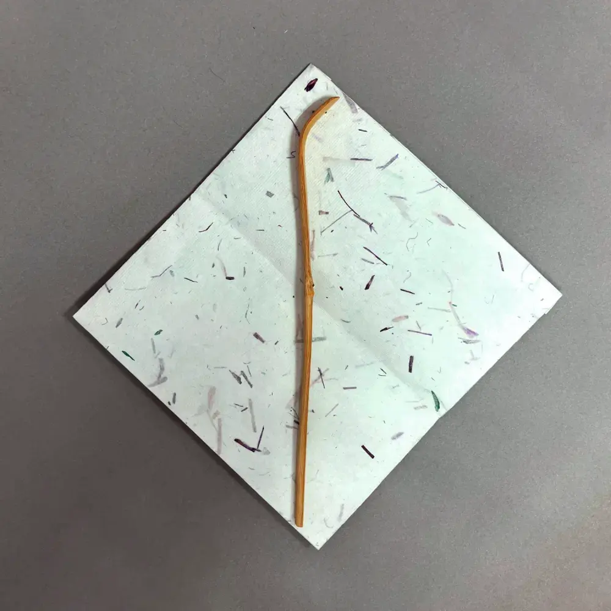
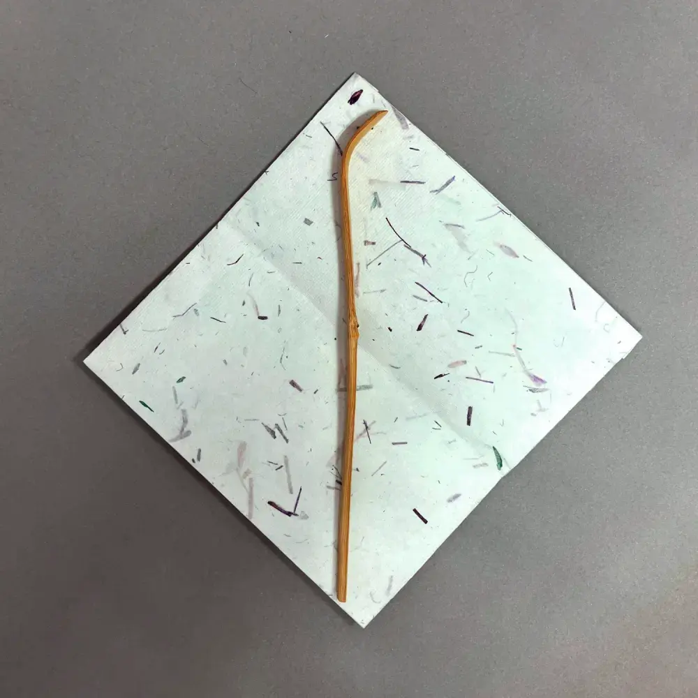
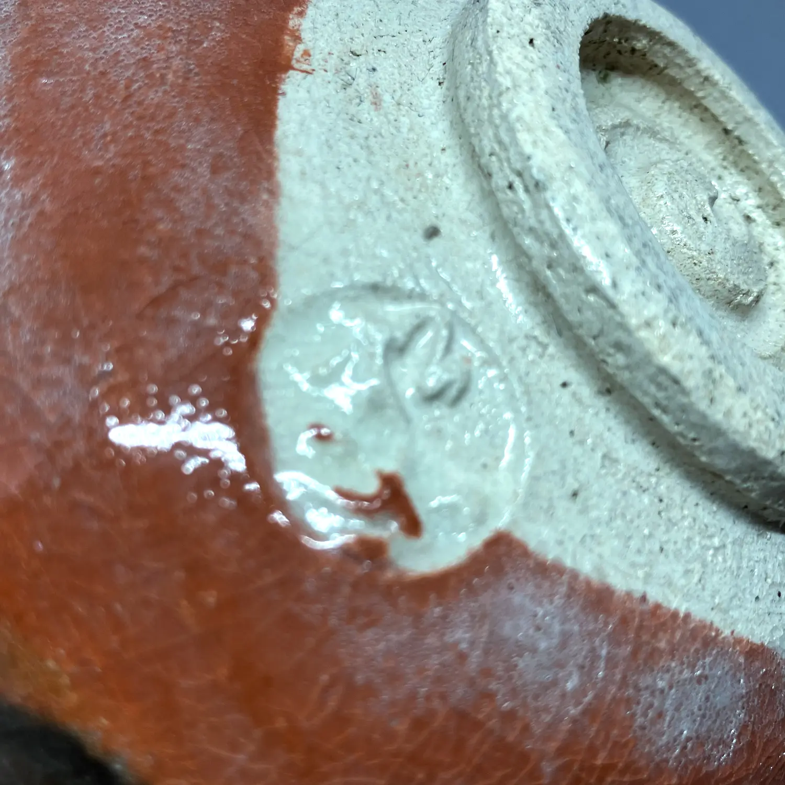
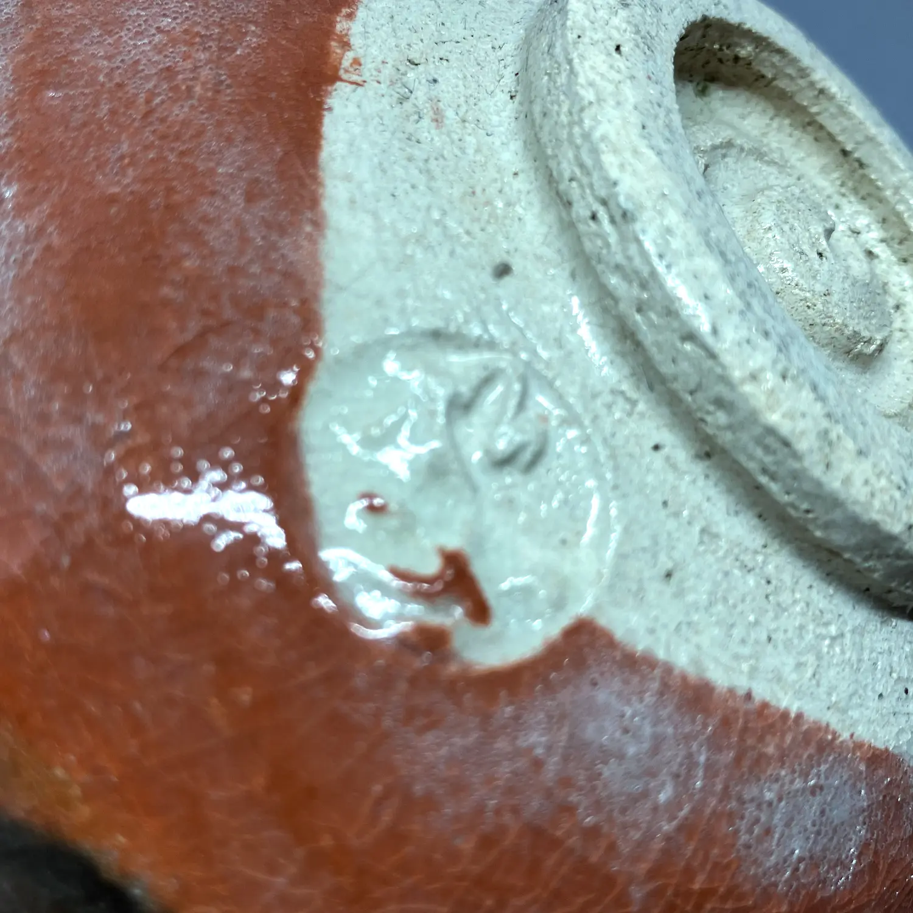
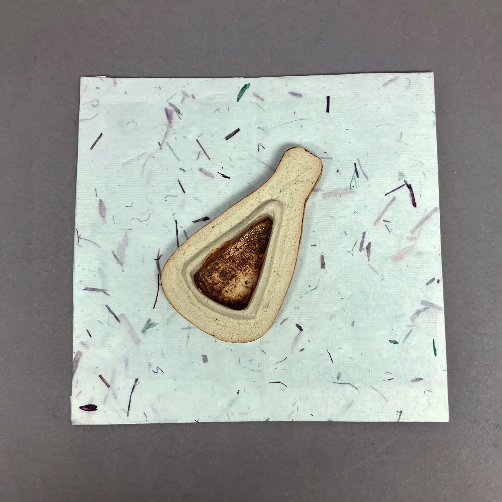
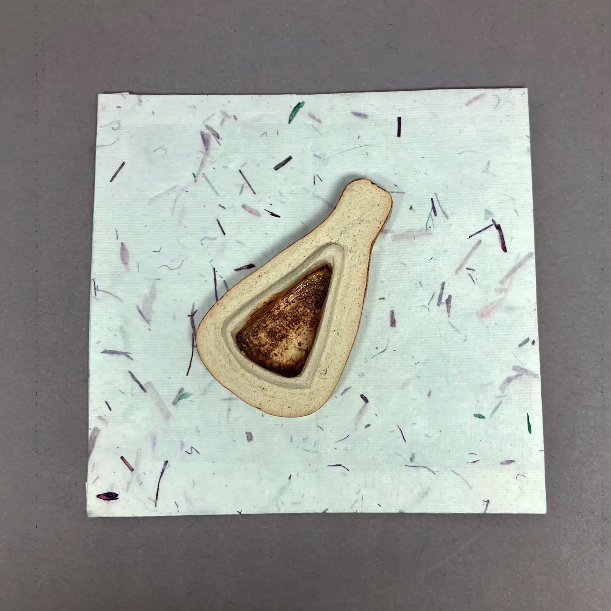
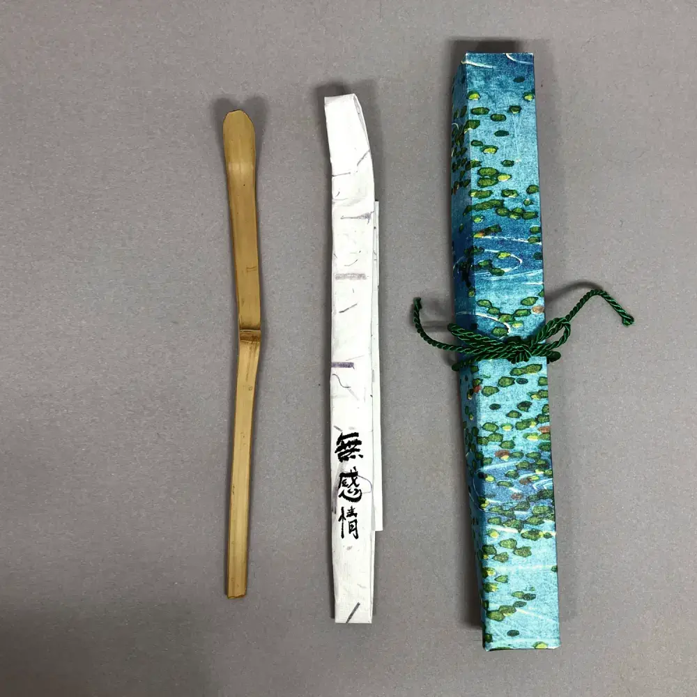
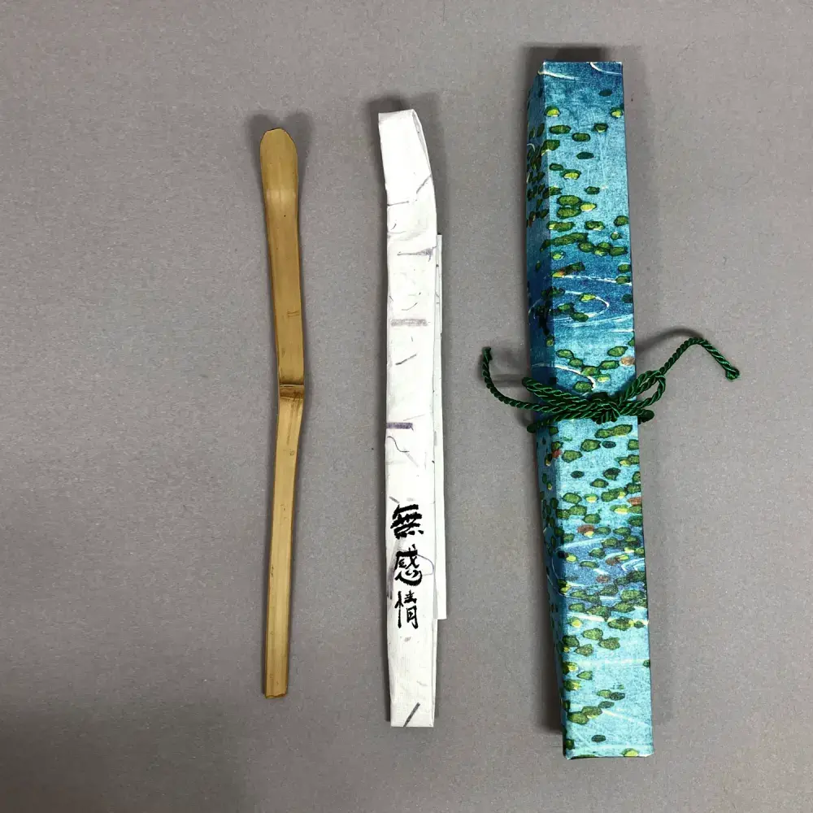

私が持っているほとんどの茶道具は、日本への旅行中に寺院のフリーマーケットで中古で購入しました。私は購入したすべての道具が好きですが、残念ながら私のアパートにはお茶を置くための限られたスペースしかありません。そのため、捨てたくないが保管もできない道具をここにリストアップしています。各道具に価格が付いているのは、これが商業的な取り組みであるためではなく、無料で提供されるものは受取人にとっても価値がないと感じられることが多いという経験からです。この考えを念頭に置いて、各道具に象徴的な価格を付けました。

魔境


 

魔境
This 天目 bowl is probably made by a Chinese or Taiwanese artist, with a very delicate 兎毫盞 glaze. It is easy to lose yourself in that deep glaze, so I called it 魔境; the illusions or distracting thoughts that occur during meditation. Comes with a 仕覆 and a cardboard box.
この 天目 ボウルはおそらく中国人または台湾のアーティストによって作られたもので、非常に繊細な 兎毫盞 の釉薬が施されています。その深い釉薬に没頭しやすいため、私はこれを 魔境 と呼びました。瞑想中に起こる幻想や気を散らす考えです。 仕覆 と段ボール箱が付属しています。
👾：このテキストは機械翻訳されました。不一致がある場合は、英語のページを参照してください。掲載されている価格は、上記の道具のみを含んでいます。写真に写っている他の道具はサイズ比較や説明のためのものです。
購入 (価格： 180 スイスフラン) 閉じる
初笑
 



初笑
1月は最初の月です：初夢、初釜、そして書初などが有名ですが、初笑（年の最初の笑い）など、他にも重要なことがたくさんあります。これらは1月にふさわしく、濃茶の厳粛な雰囲気に軽さをもたらします。
紙箱入りで、重い絹の帛紗と一緒に提供されます。これは龍村美術織物によって制作されています。伝統的には、これは今日庵から茶名を得た人々に贈られます。その硬さから、練習するのが非常に興味深いです。木箱に入っています。
👾：このテキストは機械翻訳されました。不一致がある場合は、英語のページを参照してください。
掲載されている価格は、上記の道具のみを含んでいます。写真に写っている他の道具はサイズ比較や説明のためのものです。
購入 (価格： 60 スイスフラン) 閉じる開運


 



開運
佐々木松楽作This 赤楽 tea bowl got a bit damaged in transport, including a little hole! I had it fixed by Swiss 金継ぎ artist Ursula Kaspar, and have named it 開運. This means to be open for good fortune to come in, which I found fitting, given the hole it had that now, fixed in silver, adds interest and depth.
👾：このテキストは機械翻訳されました。不一致がある場合は、英語のページを参照してください。
掲載されている価格は、上記の道具のみを含んでいます。写真に写っている他の道具はサイズ比較や説明のためのものです。
購入 (価格： 220 スイスフラン) 閉じる
釜環


釜環
佐藤清光作この釜師の一族は1735年に創立され、現在は10代目です。この家族はお茶のための鋳鉄製品に特化しており、これらの釜環は9代目によって作られました。彼自身も茶の湯を学び、茶の美意識を深めました。作家の箱が付属しています。
👾：このテキストは機械翻訳されました。不一致がある場合は、英語のページを参照してください。
掲載されている価格は、上記の道具のみを含んでいます。写真に写っている他の道具はサイズ比較や説明のためのものです。
購入 (価格： 50 スイスフラン) 閉じる
灰匙


灰匙
これらのスプーンは、風炉内の灰を整えるために使用されます。その結果の形状は灰型と呼ばれ、道具に関してホストが実際に行う数少ない作業の1つです。そのため、一部の人々は良い灰型に多くの価値を見出しており、お茶会の招待状の初めに見る灰の形状から、後続の展開がすでにわかるとまで言う人もいます。私自身はそこまで言いませんが、とても瞑想的だと感じます。全ての実践者に少しの練習をお勧めします。こちらの動画は、初心者には非常に役立つと思います。
3本のスプーンのセットです：左側のスプーンは五徳周りでの作業に適しており、中央のスプーンは灰を平らにするのに、右側のスプーンは最も古典的な形状である二文字を作る際のリッジを切るのに適しています。紙箱入りです。
👾：このテキストは機械翻訳されました。不一致がある場合は、英語のページを参照してください。
掲載されている価格は、上記の道具のみを含んでいます。写真に写っている他の道具はサイズ比較や説明のためのものです。
購入 (価格： 60 スイスフラン) 閉じる
秋の宿


秋の宿
ヘレンド作この香合は見立ての作品であり、つまり茶の湯の世界の外から取り入れられたアイテムです。茶の湯で使用されるためにアイテムを再利用する伝統が長いですし、茶室にヨーロッパ風の香りを加える素晴らしい方法です。
この香合は、有名な磁器メーカーによって作られています。この陶器は1851年のロンドン万国博覧会でビクトリア女王に感銘を与え、ヨーロッパの宮廷とのつながりを確立しました。
美しい絵柄のために秋の宿と名付けました。紙箱が付いています。
👾：このテキストは機械翻訳されました。不一致がある場合は、英語のページを参照してください。
掲載されている価格は、上記の道具のみを含んでいます。写真に写っている他の道具はサイズ比較や説明のためのものです。
購入 (価格： 20 スイスフラン) 閉じる
玉船


玉船
The name 玉船 is used in Chinese poetry, and describes a vessel for serving rice wine in a courtly setting. One poem in particular comes to mind: I sit by the red fireplace, and pour from the Jade Boat a golden cup. It suits this very special tea scoop, with its three nodes and intense shape.
I matched it with a cloth called 阿蘭陀間道, where the first three characters stand for the Netherlands. While the Dutch arrived first in Japan only in 1600, their wares had already made it into Japan before them through the Portuguese, who used the word Hollanda to refer to them, and so the Japanese word still is: オランダ or 阿蘭陀.
Includes the 古帛紗 and the tea scoop, both in their own paper box.
掲載されている価格は、上記の道具のみを含んでいます。写真に写っている他の道具はサイズ比較や説明のためのものです。
購入 (価格： 120 スイスフラン) 閉じる
琵琶

 



琵琶
加藤春鼎作琵琶（琵琶）は、日本のリュートに似た楽器であり、しばしば憂鬱と関連付けられています。楽器を香合の形にすることは、日本人が香に感謝する際に「聞く」という言葉を使うことから、特に適しています。
この琵琶は、世界中で展覧会を開催し、数々の賞を受賞してきた家族の芸術家によって作られています。芸術家の箱と銘が付いています。
銘（花押）は、田中仙翁によるものであり、大日本茶道学会の創設者の息子であり、秘伝や異なるスタイルを超えた茶道の研究と議論を促進する組織です。
👾：このテキストは機械翻訳されました。不一致がある場合は、英語のページを参照してください。
掲載されている価格は、上記の道具のみを含んでいます。写真に写っている他の道具はサイズ比較や説明のためのものです。
購入 (価格： 90 スイスフラン) 閉じる
福笑


福笑
このシンプルな萩焼茶碗の淡いピンク色は、1月に伝統的に食べられる葩餅を思い起こさせます。そのため、私はそれを福笑と名付けました。新年のはじまりにも使われます。
茶碗は輸送中に壊れたため、ウルスラ・カスパーさんがスイスで伝統的な銀継を使って修理しました。ドイツ語では「Scherben bringen Glück」⸺ 福笑の「福」は「good luck」を意味するため、名前がよく選ばれたことがわかります。段ボール箱に入っています。
👾：このテキストは機械翻訳されました。不一致がある場合は、英語のページを参照してください。
掲載されている価格は、上記の道具のみを含んでいます。写真に写っている他の道具はサイズ比較や説明のためのものです。
購入 (価格： 160 スイスフラン) 閉じる
煮物碗


煮物碗
懐石（かいせき）料理のメインディッシュは、軽く透明な出汁で煮込まれたものです。通常、季節の食材を繊細に盛り付けたもので、蒸した魚の団子や季節の野菜などがあります。必ずお椀で供されます。このコースは椀盛（わんもり）とも呼ばれ、碗（わん）を意味します。
これらのお椀は柿合せ（かきあわせ）スタイルで塗られており、木目が見えます。これは、2018年にrikyuchaで購入した、蓋付きの5つのお椀セットです。これを2回使用しました。これは漆塗りの圧縮木粉で作られており（ここで木目と見えるものはおそらく本物ではない）、
掲載されている価格は、上記の道具のみを含んでいます。写真に写っている他の道具はサイズ比較や説明のためのものです。
購入 (価格： 60 スイスフラン) 閉じる
盃


盃
茶道の前の食事中には、お酒も出されます。通常、お酒は陶器のカップから飲まれますが、茶会ではより儀式的な形で出されます：浅い盃（sakazuki 盃）、実際にはカップよりもプレートのようなもので、わずか数回の小さな口当たりの液体を含むものです。このようにお酒を出すと、とても貴重に感じられます。
セットには、5つの個々のカップ用の盃台（sakazuki dai 盃台）が付属しています。2018年にrikyuchaで購入したこのセットは、2回使用しました。ラッカー塗りの圧縮木粉から作られており、盃台とカップには紙箱が付属しています。
掲載されている価格は、上記の道具のみを含んでいます。写真に写っている他の道具はサイズ比較や説明のためのものです。
購入 (価格： 80 スイスフラン) 閉じる無感情

 

無感情
岡田三郎作学生が尋ねました。和尚 洞山良价 に寒さや暑さへの対処法を尋ねました。洞山はこう答えました：「寒くもないし、暑くもない所へ行け」。しかし、この言葉は旅をすることを意味しているのではなく、茶道で使われる水柄（みずひしゃく）のようになることを指しています。水柄は茶釜が熱くても熱さを感じず、冷たい水をくむ時も震えません。それは心がないからです。季節を強く感じる時にこの水柄を使います。
製作者は成功した銀行経営者であり、日本茶道の実践者でもありました。彼は多くの茶柄や竹製の道具を彫りました。できるだけ古い寺院から入手した竹を使用しています。紙箱付きです。
掲載されている価格は、上記の道具のみを含んでいます。写真に写っている他の道具はサイズ比較や説明のためのものです。
購入 (価格： 90 スイスフラン) 閉じる
月の客


月の客
ニコ・チョリッチ作これは、特に有名な勢多の茶杓に似た大きな茶碗に合わせて彫った茶杓です。勢多茶杓は、利休が彼の弟子の大きな水海茶碗に合わせて彫ったものと同様です。
月の客は、月を見つめる人、あるいはもっと率直に言えば、月を見つめる人を指します。これは、芭蕉の弟子である去来の詩から来ています。岩鼻やここにもひとり—月の客。ここ岩鼻でも誰かが月を見つめています。これは秋の夜を思わせるものであり、月の客が誰なのかは解釈の余地があります。著者なのか、他の誰かなのか。
この茶杓に合わせる布は、月の冷たい優雅さに合っていますが、残念ながら少しシミがあります。茶杓は紙箱に入っています。
掲載されている価格は、上記の道具のみを含んでいます。写真に写っている他の道具はサイズ比較や説明のためのものです。
購入 (価格： 40 スイスフラン) 閉じる